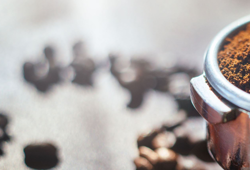

BRITISH GLUTEN
When it comes to buying good cookware, there are a lot of different options. Some people like to buy a matched set of cookware, but seasoned cooks often like to mix and match making an eclectic set that assures them the perfect finish to every dish they create.
It is hard to know what kind of pan works best for what kind of dish, so keep this handy guideline on hand and you will never choose the wrong type of pan for whatever delectable dish you whip up. When it comes to buying good cookware, there are a lot of different options. Some people like to buy a matched set of cookware, but seasoned cooks often like to mix
Selecting the cookware for your kitchen implies a few certain points you should consider: budget, cooking and eating habits, your family size, etc. One of the most essential points in choosing cookware is the material it is made of. Often, such an important detail is simply overlooked or is considered to be minor. In fact, proper understanding of differences between cookware materials will assist you in making the best choice and further on, will help maintain your cookware in a good shape.
Parties and family gatherings are popular this time of year. Whether you’re celebrating an anniversary, a birthday, graduation, a holiday or the start of your favorite sport’s season, entertaining can be quick, simple, affordable and fun if you plan ahead.
Stock your pantry, refrigerator and freezer with essentials such as precooked, hearty smoked sausage, assorted frozen, refrigerated or boxed side dishes, a variety of vegetables (frozen, fresh or canned), canned or refrigerated soups, and grated cheese for delicious meals in minutes.